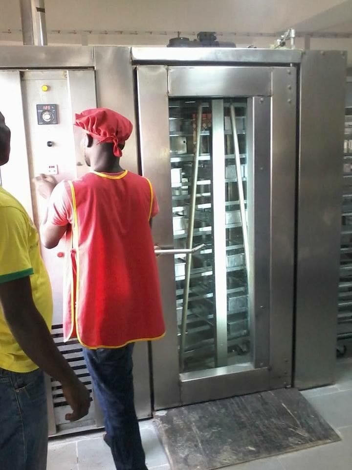
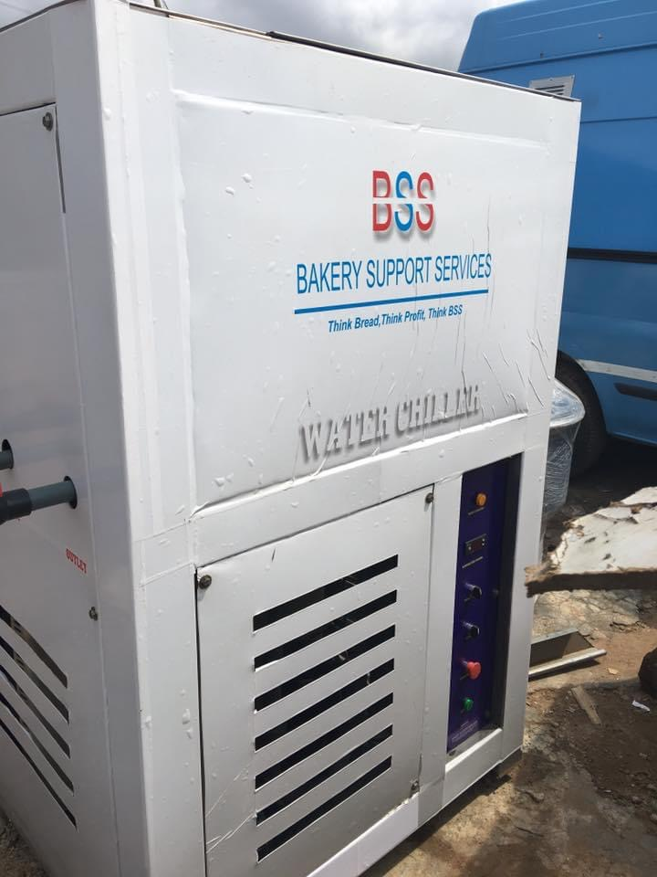
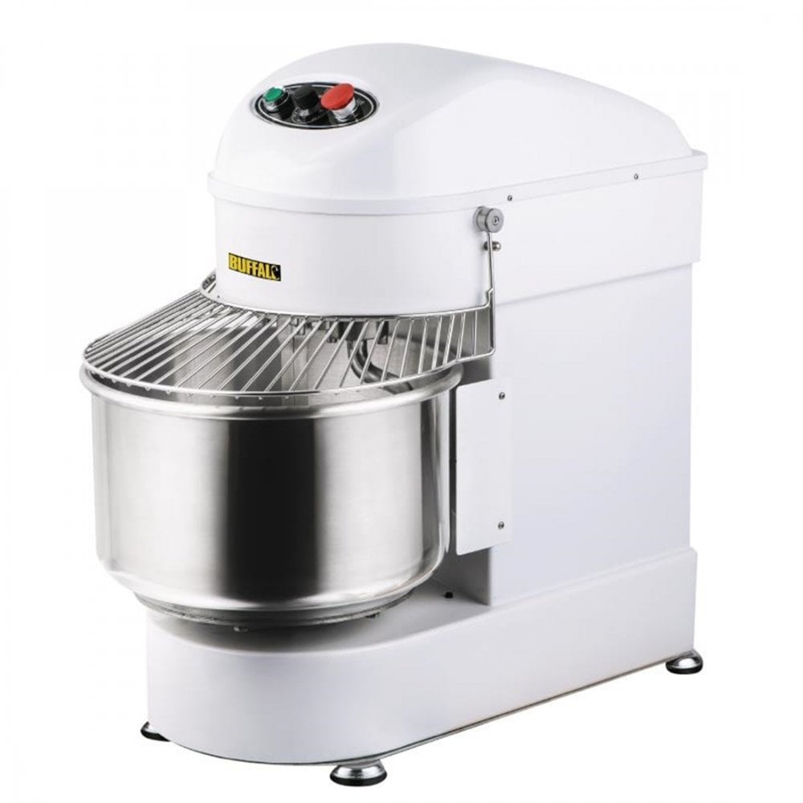
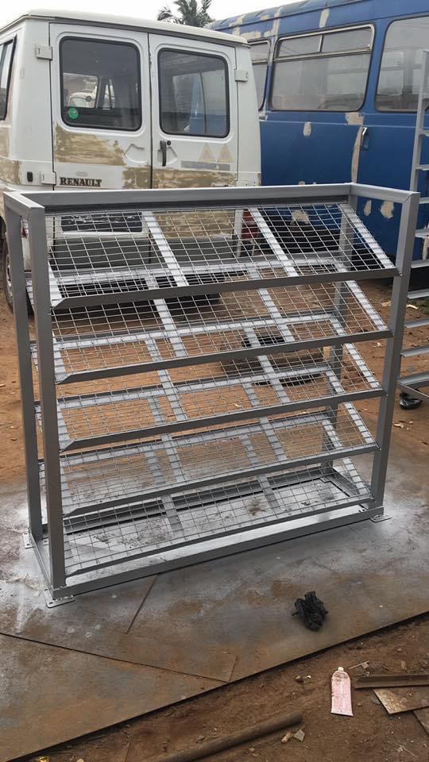
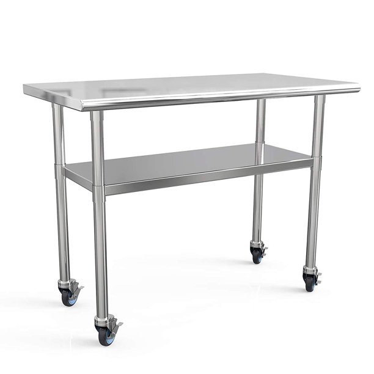
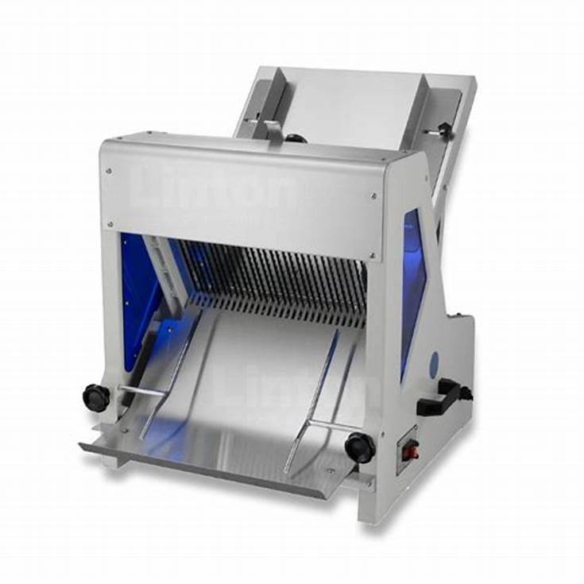
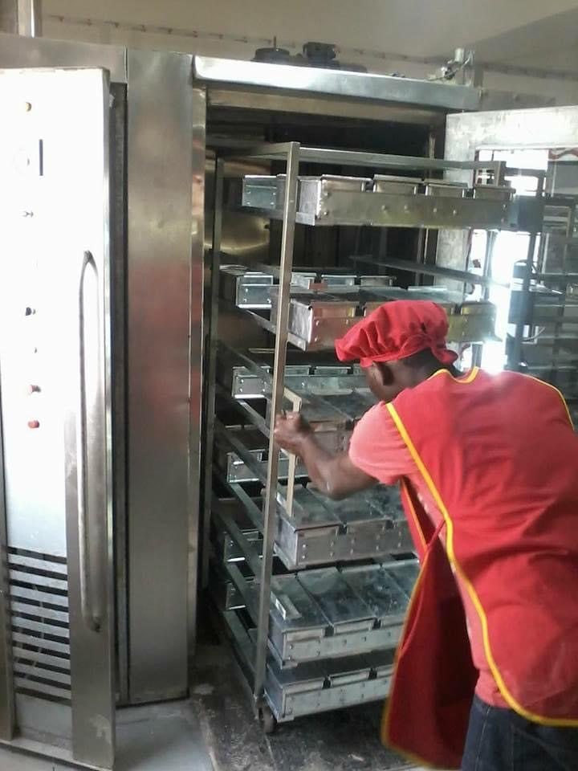
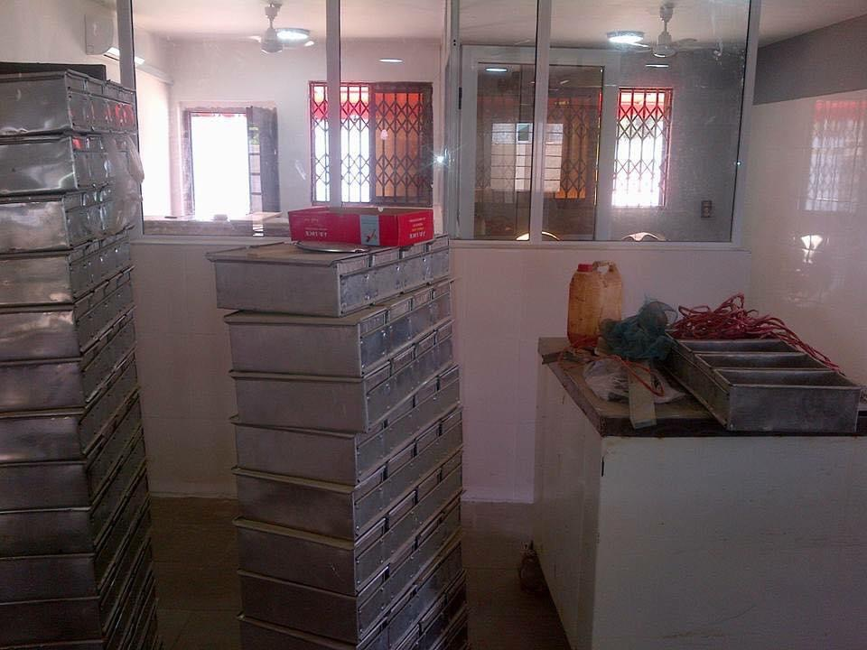
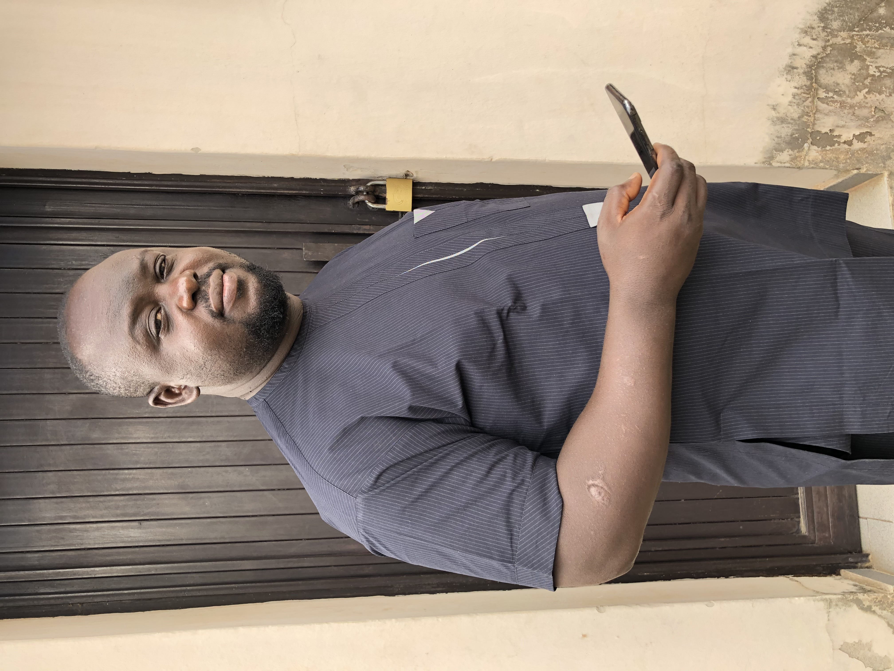

Rotary ovens
Bakery ovens for production, with setup and installation support.
From bakery setup to the equipment that keeps production moving, we help businesses build, install and maintain baking systems in Nigeria and around the world.

Browse the equipment featured on our site. Tell us what you need and we’ll help you find a suitable option for your bakery.
Bakery ovens for production, with setup and installation support.

Cooling equipment for bakery operations.

Mixing equipment to prepare dough for production.

Practical racks for moving bakery trays.

Work surfaces for preparation and everyday bakery tasks.

Equipment for consistent, efficient bread slicing.
Also ask us about baking pans and cooling trolleys. Contact BSS
Our work covers more than the equipment itself. We help plan, supply, install and support baking systems.
Support in setting up bakery operations and the systems behind them.
Construction and supply of baking equipment for food businesses.
Installation of bakery equipment and production systems.
Maintenance and consultancy to help keep operations running.
Scenes from bakery equipment and production work featured in the BSS photo collection.



Bakery Support Services began operations in 2006. Today, we support food businesses in Nigeria and around the world with baking systems, equipment supply, installation, maintenance and consultancy.
The company is headed by engineer Michael O. Alao, whose baking systems experience underpins our work with clients worldwide.
Tell us what equipment or support you need. We’re ready to discuss your bakery project.
Start on WhatsAppGet in touch directly
+234 803 434 4441michaelalao1@gmail.comEquipment enquiries · Installation · Maintenance